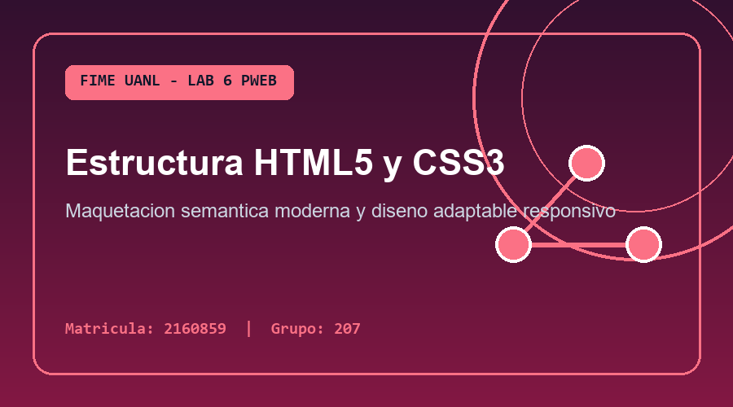
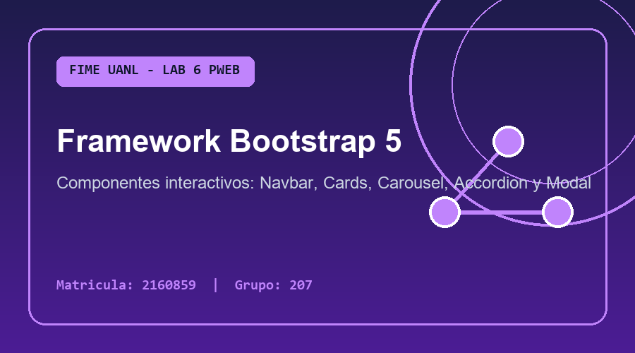
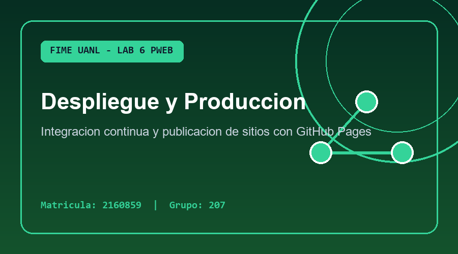

Arquitectura Frontend y Control de Versiones
Párrafo 1: En el desarrollo web contemporáneo, la combinación de HTML5 semántico, hojas de estilo CSS3 y el framework Bootstrap 5 permite construir interfaces adaptables (Responsive Web Design) que se visualizan correctamente tanto en teléfonos móviles como en monitores de escritorio. El sistema de rejilla (Grid System) de 12 columnas facilita organizar contenedores, filas y tarjetas con precisión.
Párrafo 2: Al desarrollar sitios compuestos por múltiples páginas (como index.html, pagina1.html, pagina2.html y pagina3.html), mantener un menú de navegación consistente (.navbar) con la clase .active en el enlace actual mejora significativamente la experiencia del usuario (UX), ya que le indica en todo momento en qué sección del sitio se encuentra.
Párrafo 3: Integrar Git desde el inicio de un proyecto frontend evita la pérdida accidental de estilos o scripts cuando se experimenta con nuevos componentes visuales. Cada vez que se completa una funcionalidad —como agregar nuevas páginas o integrar un modal interactivo—, se realiza un git commit atómico y descriptivo, manteniendo un historial limpio y profesional listo para desplegarse en servicios como GitHub Pages.
Tecnologías Aplicadas en este Laboratorio

Maquetación Semántica
Uso de etiquetas estructurales como <nav>, <header>, <main>, <section> y <footer> para un código limpio y accesible.

Componentes Interactivos
Implementación de barras de navegación responsivas, tarjetas, acordeones, carruseles, barras de progreso y ventanas modales.

Despliegue y Respaldo
Control total de versiones con Git y almacenamiento remoto en GitHub para trabajo colaborativo entre compañeros de equipo.
Buenas Prácticas en Git + Web
-
EsencialRutas relativas en enlaces e imágenesUsar rutas relativas (ej.
img/archivo.png) garantiza que el sitio funcione tanto en GitHub como al descomprimir el ZIP. -
RecomendadoMensajes de commit descriptivosRedactar mensajes claros en
git commit -m "..."explica qué se agregó o corrigió en cada versión. -
Flujo GitVerificar siempre con git statusRevisar el estado del repositorio antes y después de
git add -Aevita omitir recursos importantes.